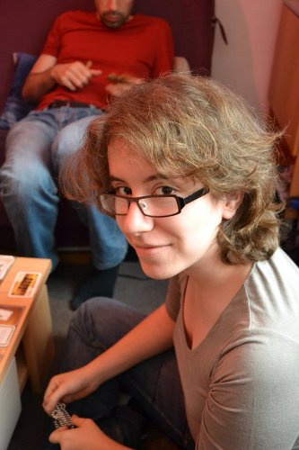

How I made my resume
…after the 50th time?
Few weeks ago, I was looking for a job.
So I crafted a common resume:
Yeah, I know, it's not really glamor!Few responses later… few interviews…
nothing serious!
(and by serious, I mean contract!)So, I decide to have fun and hack my resume.
Here's the result of my hacks!

It's all about storytelling!
(other guys talk about timeline).
Timeline
- 2004 - The Math Girl
- 2007 - The Adventure Girl
- 2008 - The Free Girl
- 2010 - The Web Girl
2004 - The Math Girl
After high school, I decided to join SUPINFO Paris
because I was pretty good in mathematics and in fixing computer problems- Maths

- Computer Sciences
- Web Technologies
- Management

2007 - The Adventure Girl

In SUPINFO, we have the chance to choose our campus every year.
China, United States, United Kingdom,... it's only a case to check at the beginning of the year!So, in second year, I check the chinese case, to pass my year in SUPINFO Tianjin.
So, I lived one year in China, in Tianjin, but I also visited many cities of this country, such as Beijing, Xian, Shanghaï,...

2010 - The Web Girl
Cours de management + création d'entreprise en classe
+ TechCrunch + Girls In Tech Paris
I focused on community business
2011 - The Mozillian Girl
Mozilla Reps
Recap Timeline
2012 - ???
Put here a picture of the person who will receive this resume
Let's meet!
julia.buchner.fr | julia@buchner.fr
Twitter @GiulianT
Linkedin.com
Thanks for your reading !
One more thing…
This slide is amazing!